Plot group means with error bars. Error bars can represent standard deviations, standard errors, or confidence intervals. Optionally, plots can be based on robust statistics.
mean_plot(
data,
y,
x,
by,
pointsize = 2,
dodge = 0.2,
lines = TRUE,
width = 0.2,
error = c("se", "sd", "ci"),
ci = 0.95,
robust = FALSE
)a data frame.
a numeric response variable.
a categorical explanatory variable.
a second categorical explanatory variable (optional).
numeric. Point size (default = 2).
numeric. If a by variable is included, points and error bars are
dodged by this amount in order to avoid overlap (default = 0.2).
logical. If TRUE, group means are connected.
numeric. Width of the horizontal top and bottom of error bars (default = 0.2). Set to 0 to produce pointranges instead of error bars.
character. Each error bar represents either the standard deviation
(sd), standard error of the mean (se), or confidence interval
(ci).
numeric. if error = "ci", this indicates the size of the confidence
interval. The default is 0.95 or a 95 percent confidence interval for the mean.
logical. If TRUE, the means, standard deviations, standard errors,
and confidence intervals are based on robust statistics. See Details.
Default is FALSE.
a ggplot2 graph.
Robust statistics are based on deciles. The mean is estimated as the average of the nine decile values dividing the numeric variable into 10 equal quantiles. The standard deviation is bases on the sample standard deviation of the nine decile values. The standard error and confidence interval are calculated in the normal way, but use the robust mean and standard deviation. See Abu-Shawiesh et al (2022).
Ahmed Abu-Shawiesh, M., Sinsomboonthong, J., & Kibria, B. (2022). A modified robust confidence interval for the population mean of distributrion baed on deciles. Statistics in Transition, vol. 23 (1). pdf
data(cars74)
mean_plot(cars74, mpg, cyl)
mean_plot(cars74, mpg, cyl, am)
mean_plot(cars74, mpg, cyl, am, error = "ci",
width = 0, lines = FALSE, robust = TRUE)
